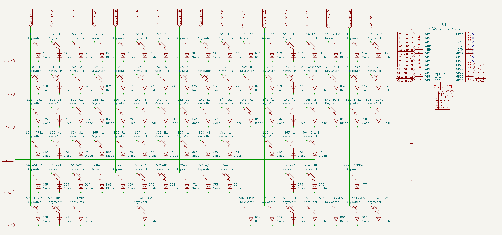
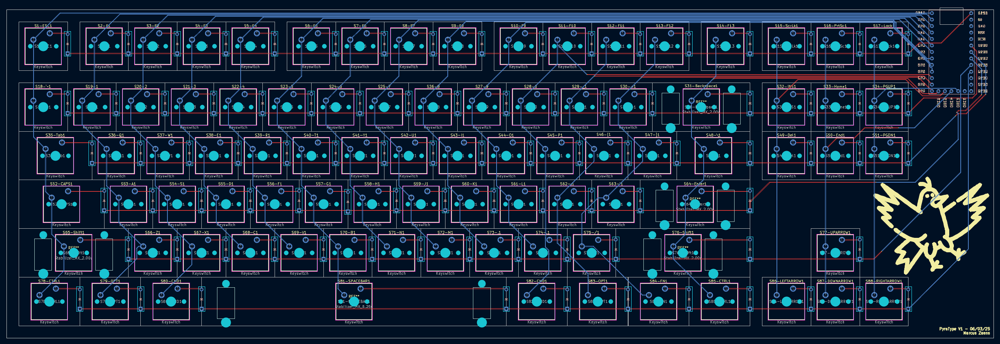
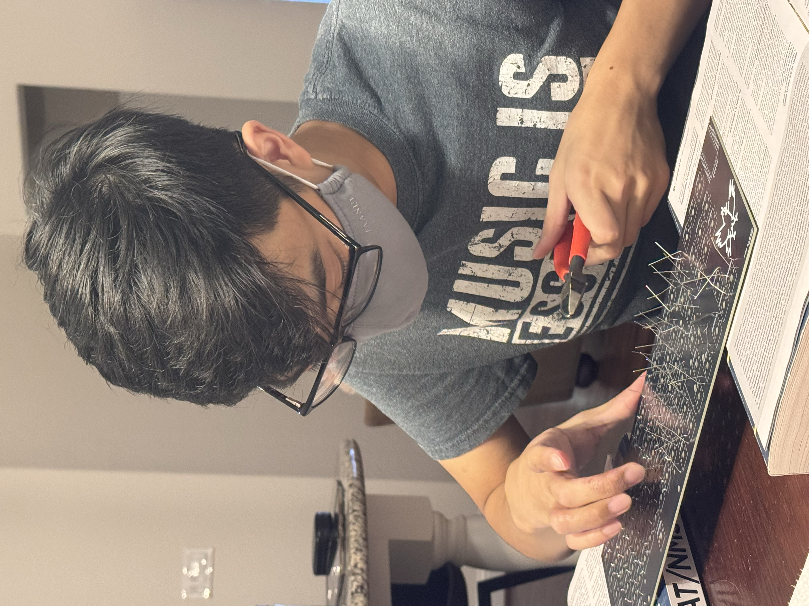
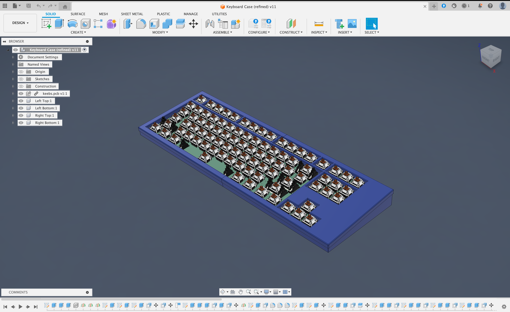
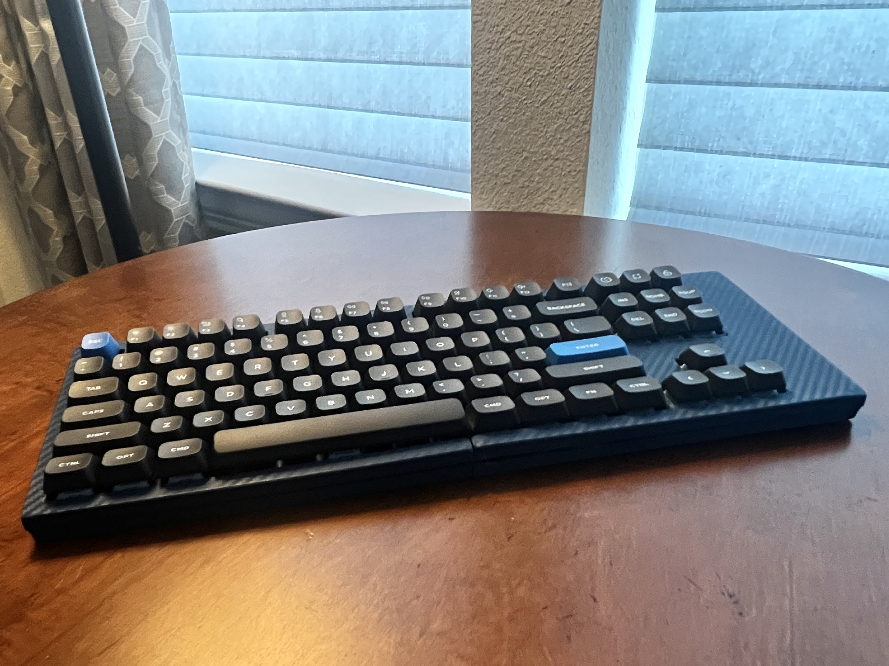

Custom Mechanical Keyboard
An 80% TKL mechanical keyboard designed from scratch with custom PCB, QMK firmware, and 3D-printed case
Project Overview
This project began during my sophomore summer when I discovered the custom keyboard community. Inspired by creators like Joe Scotto, I embarked on a journey to design and build a fully functional mechanical keyboard from the ground up. What started as curiosity evolved into a comprehensive engineering project involving PCB design, firmware programming, and mechanical engineering.
The keyboard features an 88-key matrix architecture, utilizing a row-column scanning system that requires only 23 GPIO pins instead of 88 individual connections. This efficient design incorporates diodes to prevent ghosting and enable N-key rollover, ensuring every keypress is accurately registered even during rapid typing or gaming.
Design & Engineering Process
The PCB was designed in KiCAD after extensive research into keyboard matrix theory. I started with a simple 3×3 numberpad prototype to understand how diodes and the scanning matrix work together. This foundation allowed me to scale up confidently to the full 80% layout.


After finalizing the design, I ordered five PCBs from JLCPCB. The manufacturing process taught me valuable lessons about design validation—I discovered two critical mistakes in my initial design where column traces were accidentally routed to ground pins. This required creative problem-solving: removing header pins and manually wiring the connections to available GPIO pins.
Firmware Development
Programming the RP2040 Pro Micro proved challenging but rewarding. Initially planning to use KMK firmware, I pivoted to QMK when I discovered my microcontroller lacked the necessary CircuitPython support. QMK's more mature ecosystem provided extensive features including VIA support for real-time key remapping.


The debugging process was intensive, involving weeks of testing pin assignments and matrix configurations. The breakthrough came when I decided to proceed with soldering despite uncertainties—shorting row and column pins confirmed the matrix logic was sound, validating all the firmware work.
Assembly & Fabrication
Hand-soldering 88 diodes and switches was meticulous work requiring patience and precision. Each 1N4148 diode needed proper orientation to ensure the matrix functioned correctly. After soldering, I added PCB-mounted stabilizers for larger keys and installed Gateron switches with Nuphy Gem keycaps.



Case Design
The case design went through numerous iterations in Fusion 360. I used Keyboard Layout Editor and SwillKB for initial layouts before creating a custom four-part snap-fit design. The case features standoffs for PCB mounting, a 6° typing angle for ergonomics, a custom USB-C cutout, and an embossed title plate.

Printing in matte dark blue PLA, I achieved a professional finish that complements the Gem keycaps. The snap-fit design eliminates the need for screws while maintaining structural integrity and ease of assembly.
Final Result

Key Learnings
- Mastered PCB schematic design and layout using KiCAD's ERC and DRC tools
- Learned keyboard matrix theory: row-column scanning, diode implementation, and ghosting prevention
- Developed proficiency in QMK firmware configuration and compilation
- Gained hands-on experience with surface-mount soldering techniques
- Improved CAD modeling skills with complex assemblies and tolerance management
- Understood microcontroller GPIO requirements and power management
- Practiced iterative design methodology through multiple prototype cycles
Future Enhancements
This project opened doors to numerous possibilities for improvement. Future iterations could incorporate wireless connectivity using ZMK firmware with a different microcontroller, RGB underglow for aesthetics and functionality, rotary encoders for volume control, and even an OLED display for layer indication and system stats.